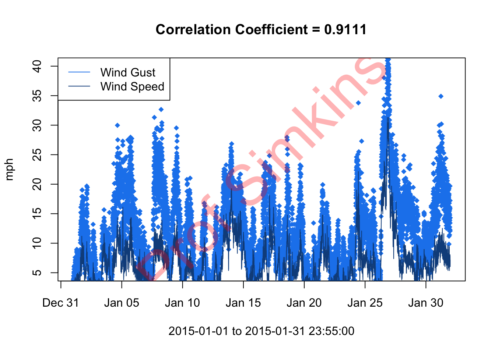

7 Time Series fun with DEOS
This week we’ll look at some Time-Series data from DEOS. Delaware has the highest concentration of environmental monitoring stations in the country thanks to DEOS (Delaware Environmental Observing System) which is controlled by University of Delaware’s CEMA (Center for Environmental Monitoring and Analysis). The data collected using this dense network is useful for a variety of purposes. Before we dive into the data, let’s cover an important skill - the for loop.
7.1 For Loops
For loops & conditional statements are a key skill in programming. They allow you to process through large datasets or multiple datasets thus minimizing the amount of manual work you need to do. The basic for loop looks like this…
# Generate sequence of numbers from 1 to 10 using the seq() function (seq for sequence)
numbersList = seq(from=1,to=10,by=1)
# Multiply each number in the numbersList by 8 and print the result
for (i in numbersList){
temNumber = i * 8
print(temNumber)
}## [1] 8
## [1] 16
## [1] 24
## [1] 32
## [1] 40
## [1] 48
## [1] 56
## [1] 64
## [1] 72
## [1] 80Notice the general structure of R for loops. for signals to R you’re beginning a for loop, which requires the general structure to look like:
for (something in something inside these parentheses){ do something within these curly brackets }
Yes, you must have these parentheses and curly brackets present and surrounding the appropriate code. If you forget a parentheses or curly bracket you’ll have errors pop up…this happens to advanced programmers all the time, so don’t be discouraged if it takes time getting used to this.
The general structure is always: for(condition){do something}. If statements are set up the same way
# Generate sequence of numbers from 1 to 10 using the seq() function (seq for sequence)
numbersList = seq(from=1,to=10,by=1)
# Multiply each number in the numbersList by 8 and print the result
for (i in numbersList){
if (i==4){
temNumber = i * 8
print(temNumber)
}
}## [1] 32This is referred to as a nested loop, because there is a conditional statement within another one. Key takeaway here: in programming languages, = is an assignment (i.e. x = 4), whereas == is an equality test (i == 4). To put this loop in layman’s terms: for i in numbersList, if i is equal to 4, multiply i by 8 and then print temNumber.
We can also have nested for loops.
# Generate sequence of numbers from 1 to 3 this time using the seq() function (seq for sequence)
numbersList = seq(from=1,to=3,by=1)
lettersList = list("A", "B", "C")
for (num in numbersList){
for (let in lettersList){
print(c(num,let))
}
}## [1] "1" "A"
## [1] "1" "B"
## [1] "1" "C"
## [1] "2" "A"
## [1] "2" "B"
## [1] "2" "C"
## [1] "3" "A"
## [1] "3" "B"
## [1] "3" "C"You can name the object within the list whatever you want (i, j, num, let, etc.). Also, c() is the concatenate function that combines values into a vector or list. The order doesn’t matter in this for loop…
# Generate sequence of numbers from 1 to 3 this time using the seq() function (seq for sequence)
numbersList = seq(from=1,to=3,by=1)
lettersList = list("A", "B", "C")
for (let in lettersList){
for (num in numbersList){
print(c(num,let))
}
}## [1] "1" "A"
## [1] "2" "A"
## [1] "3" "A"
## [1] "1" "B"
## [1] "2" "B"
## [1] "3" "B"
## [1] "1" "C"
## [1] "2" "C"
## [1] "3" "C"But it does in this one…
# Generate sequence of numbers from 1 to 10 using the seq() function (seq for sequence)
numbersList = seq(from=1,to=10,by=1)
# Multiply each number in the numbersList by 8 and print the result
if (i==4){
for (i in numbersList){
temNumber = i * 8
print(temNumber)
}
}Here’s one more example for multi conditional statement with an else…
# Generate sequence of numbers from 1 to 3 this time using the seq() function (seq for sequence)
numbersList = seq(from=1,to=3,by=1)
lettersList = list("A", "B", "C")
for (num in numbersList){
for (let in lettersList){
if (num == 3 && let == "B"){
print(c(num,let))
} else{
print("Not what we want")
}
}
}## [1] "Not what we want"
## [1] "Not what we want"
## [1] "Not what we want"
## [1] "Not what we want"
## [1] "Not what we want"
## [1] "Not what we want"
## [1] "Not what we want"
## [1] "3" "B"
## [1] "Not what we want"&& means “and” … || means “or”…these are useful in multi conditional statements. The else statement is an appendage of the if statement. It basically means if num == 3 and let == B is false, print "not what we want". Notice that the ‘else’ statement is outside of the if statement but immediately after it.
In Class Exercise: debug this for loop
soiltype <- list("sand", "silt", "saline", "clay", "peat")
permeability <- c(0.09, 0.05, 0.03, 0.01, 0.005)
for (s in seq(length(soiltype)){
print(a)
for (p in permeability)
if (p == 0.05 | p == 0.005){
print(permeability[s])
}
}
}And get this output…
## [1] 1
## [1] 0.09
## [1] 0.09
## [1] 2
## [1] 0.05
## [1] 0.05
## [1] 3
## [1] 0.03
## [1] 0.03
## [1] 4
## [1] 0.01
## [1] 0.01
## [1] 5
## [1] 0.005
## [1] 0.0057.2 DEOS Data
The dataset we’ll be using is named - DEOS.csv . It contains a variety of meteorological variables collected at 5 minute intervals. Let’s dive into the coded example.
Note: When we load the file, your path might look something like this:
Downloads/geog473-673/datasets/DEOS.csv
Remember, we need to tell R where we stored the file we want to open. We can use getwd() to see where R is looking right now. From there, we can tell it to look in Downloads, or Documents, or Desktop, etc.
# load the data using read.csv()
deos_data <- read.csv("../datasets/DEOS.csv", header = TRUE, skip=0, stringsAsFactors = FALSE)
# view the top few rows of data using the head() function
head(deos_data)## Timestamp..UTC. Air.Temperature.deg..C. Dew.Point.Temperature.deg..C. Wind.Speed.m.sec. Wind.Direction.deg.. Barometric.Pressure.. Solar.Radiation.UNKNOWN.
## 1 2014-04-04 04:05 7.1 4.3 3.7 351.7 NA 0
## 2 2014-04-04 04:10 6.9 4.3 3.5 352.9 NA 0
## 3 2014-04-04 04:15 6.8 4.3 3.9 357.5 NA 0
## 4 2014-04-04 04:20 6.7 4.4 3.9 356.8 NA 0
## 5 2014-04-04 04:25 6.6 4.4 3.3 5.5 NA 0
## 6 2014-04-04 04:30 6.6 4.4 2.7 18.4 NA 0
## Wind.Gust.Speed..5..m.sec. Gage.Precipitation..5..mm.
## 1 5.1 0.00
## 2 5.8 0.00
## 3 6.2 0.25
## 4 5.9 0.00
## 5 4.9 0.00
## 6 3.5 0.00## Timestamp..UTC. Air.Temperature.deg..C. Dew.Point.Temperature.deg..C. Wind.Speed.m.sec. Wind.Direction.deg.. Barometric.Pressure.. Solar.Radiation.UNKNOWN.
## Length:182645 Min. :-51.0 Min. :-53.300 Min. : 0.100 Min. : 0.0 Mode:logical Min. : 0.0
## Class :character 1st Qu.: 7.6 1st Qu.: 2.200 1st Qu.: 1.800 1st Qu.: 99.3 NA's:182645 1st Qu.: 0.0
## Mode :character Median : 15.2 Median : 10.200 Median : 2.600 Median :202.2 Median : 4.0
## Mean : 14.1 Mean : 8.505 Mean : 2.997 Mean :187.0 Mean : 192.7
## 3rd Qu.: 21.2 3rd Qu.: 16.200 3rd Qu.: 3.700 3rd Qu.:258.9 3rd Qu.: 313.0
## Max. : 37.0 Max. : 25.500 Max. :16.700 Max. :360.0 Max. :1335.0
## Wind.Gust.Speed..5..m.sec. Gage.Precipitation..5..mm.
## Min. : 0.100 Min. :0.00000
## 1st Qu.: 2.900 1st Qu.:0.00000
## Median : 4.400 Median :0.00000
## Mean : 4.907 Mean :0.01354
## 3rd Qu.: 6.400 3rd Qu.:0.00000
## Max. :24.400 Max. :9.65000## [1] "Timestamp..UTC." "Air.Temperature.deg..C." "Dew.Point.Temperature.deg..C." "Wind.Speed.m.sec." "Wind.Direction.deg.."
## [6] "Barometric.Pressure.." "Solar.Radiation.UNKNOWN." "Wind.Gust.Speed..5..m.sec." "Gage.Precipitation..5..mm."#the variable names look wonky because they have spaces in them - spaces in variable names is a big no-no
#change the names to something more readable
names(deos_data) = c("datetime", "air_temperature", "dewpoint", "windspeed", "winddirection", "pressure", "solar_radiation", "wind_gust", "precipitation")
# print the first datetime value
deos_data$datetime[1]## [1] "2014-04-04 04:05"## [1] "character"# give it a datetime class, notice the format
deos_data$datetime = as.POSIXct(deos_data$datetime, format = '%Y-%m-%d %H:%M')
# subset the data using the which.min() and which.max() functions to find our indices
low_ind = which.min(deos_data$datetime < "2014-04-04 00:00:00")
upper_ind = which.max(deos_data$datetime > "2015-04-04 23:59")
# plot the dataset by indexing it between teh low_ind and upper_ind
plot(deos_data$datetime[low_ind:upper_ind], deos_data$air_temperature[low_ind:upper_ind], type = "l", col = 'red',
xlab = paste0(deos_data$datetime[low_ind], " to ", deos_data$datetime[upper_ind]), ylab = "Celsius")
# add a title to the plot
title("1 Year Air Temperature at Station")
#subset the data using the subset function this time
subDeos = subset(deos_data, deos_data$datetime >= "2014-07-04 00:00:00" & deos_data$datetime <= "2014-07-11 23:59:00")
# Now add dewpoint to that plot
plot(x = subDeos$datetime, y = subDeos$air_temperature, type = "l", col = 'red', xlab = paste0(subDeos$datetime[1], " to ", subDeos$datetime[length(subDeos$datetime)]), ylab = "Celsius", ylim = c(5,40))
# add "lines" to the plot, in this case we want our line to be the dewpoint
lines(x = subDeos$datetime, y = subDeos$dewpoint, col = 'yellow')
legend('bottomright', legend=c('Air Temp', 'Dew Pt'), col = c('red', 'yellow'), lty = c(1, 1))
title("Air Temperature & Dew Point Temperature")
7.3 Assignment
- Subset dataset to January 2015 only
- Convert Wind Speed & Wind Gust data from m/s to mph
- Plot wind speed and wind gust on same plot - wind gust as points first, then wind speed as a line second
- Hint: you’ll have to use an argument of
type = "p"for wind gust.
- Add legend
- Compute correlation coefficient between wind gust and wind speed using
cor()function - add to title of plot - Deliver Resulting Plot to Canvas assignment week3
Aim for something like this (does not have to be exact)…